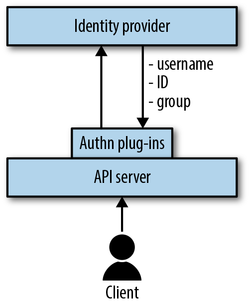
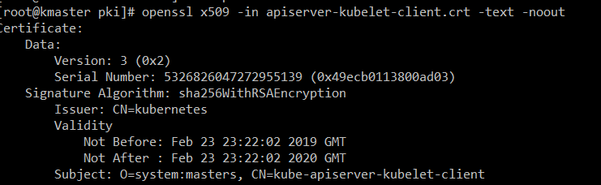
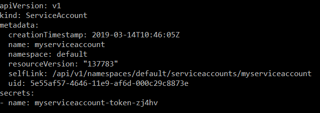
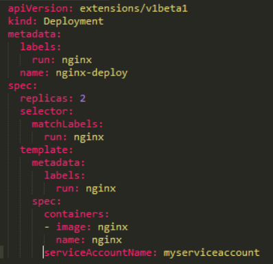

When the Kubernetes API-Server is contacted by any of the clients such as the kubectl, kubelet, scheduler etc. it must verify that they are who they say they are and check they have the correct permissions to carry out the operation they have requested. The sequence of these tasks are:
Authentication --> Authorization --> Admission Control
 From Kubernetes Security
The client presents its credentials to the API server.
The API server uses one of the authentication plug-ins to establish the identity with an identity provider.
The identity provider verifies the request information, including username and group membership.
If the credentials are in order, the API server moves on to check permissions (Authorization)
Kubernetes API does not have a user object - Users are strings associated with a request:
Username: "John"
Group: "Developer"
This makes the authentication process difficult to understand for users new to Kubernetes. The Kubernetes API-Server needs to authenticate the clients it communicates with. There are several plugins available:

Another less used plug in available is the Bearer token webhook. A base64 Basic authorization header is passed with the request.
"Bearer: Authorization (token)"
In this case when the kubectl (or other client) sends request to the API-Server and the API-Server is configured to listen for a webhook request it sends the request for authentication off to another service which will validate the credentials in the token.
Whether you use, client certificates, tokens, webhooks or a static file on disk to authenticate your users, none of these approaches are configurable in the Kubernetes API, these are authentication plugins that can be used with Kubernetes but authentication happens externally to Kubernetes.
The following kubectl commands can be run from a terminal or command prompt
The only credentials that are managed by the Kubernetes API are from the Service Account objects, in the form of a signed JWT token.
When you create a Service account object a secret is created.
Running the command:
kubectl create serviceaccount myserviceaccount
creates a Service Account object
We can view the Service Account yaml file with -
kubectl get serviceaccount myserviceaccount -o yaml
and see the secret has been created.

Using the name of the secret, it can be examined with the command:
kubectl get secrets myserviceaccount-token-xxxx -o yaml
The token that is produced is a base64 encoded JWT token which has been signed by the API-server. Once the base64 encoding has been decoded the JWT token can be decoded trivially online and reveals information about the issuer, service account, namespace and secret name.
The token can also be retrieved with:
kubectl describe secret myserviceaccount-token-xxxx
This token can be used to authenticate with the API-Server, so care should be taken who is given access to the service accounts because anyone with access to the token can access the API-Server, authenticating as the service account from outside of the cluster.
Once a service account has been created it can be associated with any pod running in the namespace, by adding the service account to a deployment yaml file at template.spec.serviveAccountName as shown below.

When the pod is created the secrets are mounted to the pod and used to authenticate with the API-Server. If you do not specify a service account when creating a pod the default service account will be used.
The secrets token, ca.crt and namespace can be found in the pod file system at /var/run/secrets/kubernetes.io/serviceaccount.